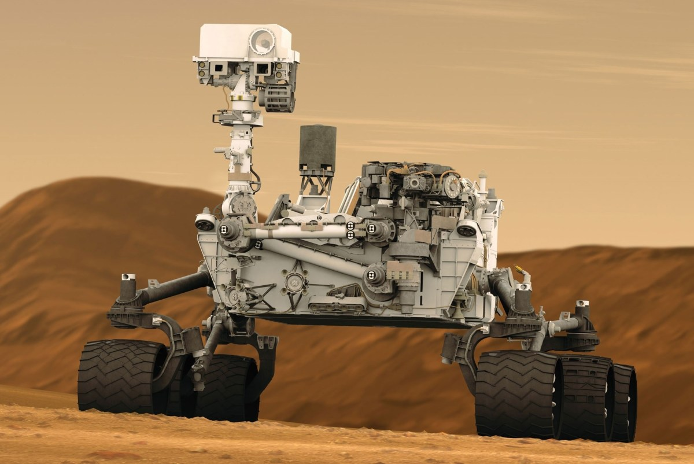

Robot curiosity
La misión espacial La Mars Science Laboratory (abreviada MSL) incluye un astromóvil de exploración marciana dirigida por la NASA. fue finalmente lanzada el 26 de noviembre de 2011 a las 10:02 a. m. EST, y aterrizó en Marte exitosamente en el cráter Gale el 6 de agosto de 2012, aproximadamente a las 05:31 UTC, enviando sus primeras imágenes a la Tierra.
Phoenix Mars Lander
Phoenix Mars Lander fue una sonda espacial construida por la NASA, lanzada el 4 de agosto de 2007 desde la base de Cabo Cañaveral con destino al planeta Marte. Su llegada se produjo a las 11:54 p. m. GMT del 25 de mayo de 2008 (MSD 47777 1:02 AMT, 25 Kumbha 212 Dariano).